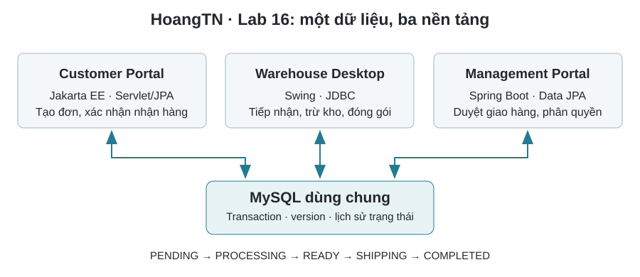

HoangTN · Công nghệ Java
Lab 16. Hệ thống đơn hàng đa nền tảng
Trong bài này
- Giới thiệu
- 1. Bối cảnh và yêu cầu bài toán
- 2. Mục tiêu
- 3. Công cụ sử dụng
- 4. Kiến trúc tổng thể
- 5. Luồng nghiệp vụ thống nhất
- 10. Mỗi lần chuyển trạng thái, hệ thống ghi một dòng lịch sử.
- Bài 1. Xây dựng cơ sở dữ liệu dùng chung
- Bài 2. Jakarta EE - Khách hàng tạo đơn hàng
- Bài 3. Java Swing - Nhân viên kho xử lý đơn hàng
- Bài 4. Spring Boot - Quản lý và phê duyệt giao hàng
- Bài 5. Kiểm thử luồng nghiệp vụ xuyên suốt
- Bài 6. Hủy đơn và hoàn lại tồn kho
- Bài 7. Tìm kiếm và lọc đa điều kiện
- Bài 8. Quản lý xung đột dữ liệu
- Bài 9. Dashboard thống kê
- Bài 10. Nhật ký và truy vết nghiệp vụ
- 11. Phân công công việc nhóm gợi ý
- 12. Sản phẩm cần nộp
- 13. Nội dung báo cáo
- 14. Thang điểm đánh giá
- 15. Điều kiện đạt bài lab
- 16. Câu hỏi củng cố
- 17. Hướng phát triển
- 18. Tài liệu tham khảo
Chương 4 · Nội dung, bài có hướng dẫn và bài tự thực hiện theo tài liệu được cung cấp.
Mã mẫu thực thi trong repository được biên tập thành project có thể build. Các khối code gợi ý bên dưới giữ vai trò hướng dẫn trong bài, có thể cần hoàn thiện hoặc ghép vào project. Xem README của từng lab để biết phạm vi đã triển khai và cách chạy.

Giới thiệu
LAB 16.
XÂY DỰNG HỆ THỐNG XỬ LÝ ĐƠN HÀNG ĐA NỀN TẢNG
Java Swing - Jakarta EE - Spring Boot - MySQL
Nội dung Thông tinHọc phần Công nghệ Java
Tên bài lab Xây dựng hệ thống xử lý đơn hàng đa nền tảng sử dụng chung cơ sở dữ liệu
Java SE/Swing, MVC, JDBC, Jakarta EE, Servlet/JSP hoặc JSF, JPA, Spring Boot, Phạm vi kiến thức Spring MVC, Spring Data JPA, Spring Security
Thời lượng gợi ý 01 buổi thực hành 3 tiết; kế thừa các project đã xây dựng ở các chương trước
Hình thức thực hiện Nhóm 3-5 sinh viên
Sản phẩm nộp 03 ứng dụng Java + cơ sở dữ liệu MySQL + video demo + báo cáo kiểm thử
ĐỊNH HƯỚNG TÍCH HỢP
Bài lab không tạo ba bài toán rời rạc. Ba nền tảng đảm nhiệm các vai trò khác nhau trong cùng một quy trình xử lý đơn hàng và sử dụng chung một cơ sở dữ liệu. Dữ liệu được tạo trên một nền tảng phải được tiếp nhận, xử lý và theo dõi trên các nền tảng còn lại mà không nhập lại dữ liệu.
1. Bối cảnh và yêu cầu bài toán
Một cửa hàng cần xây dựng hệ thống quản lý đơn hàng cho ba nhóm người sử dụng. Mỗi nhóm làm việc trên một nền tảng phù hợp với bối cảnh nghiệp vụ nhưng toàn bộ hệ thống phải vận hành trên một nguồn dữ liệu thống nhất. Nhóm người dùng Nền tảng Nghiệp vụ chính
Xem sản phẩm, đặt hàng, theo dõi đơn và xác nhận đã nhận
Khách hàng Customer Portal - Jakarta EE
hàng. Warehouse Desktop - Java Tiếp nhận đơn, kiểm tra tồn kho, trừ kho, đóng gói và xác
Nhân viên kho
Swing nhận sẵn sàng giao. Management Portal - Spring Quản lý sản phẩm, phê duyệt giao hàng, theo dõi báo cáo và
Quản lý/Admin
Boot nhật ký.Luồng tối thiểu phải thể hiện: khách hàng tạo đơn trên Jakarta EE; đơn xuất hiện trên Java Swing; nhân viên kho xử lý tồn kho và đóng gói; quản lý phê duyệt trên Spring Boot; khách hàng theo dõi và xác nhận hoàn thành trên Jakarta EE.
2. Mục tiêu
STT Mục tiêu cần đạt
1 Phân biệt vai trò của Java SE, Jakarta EE và Spring Boot trong một hệ thống đa nền tảng.
2 Thiết kế cơ sở dữ liệu dùng chung, thống nhất bảng, cột, trạng thái và quy tắc toàn vẹn.
3 Xây dựng ứng dụng Java Swing theo MVC và truy xuất MySQL bằng JDBC/DAO.
4 Xây dựng ứng dụng Jakarta EE sử dụng Servlet/JSP hoặc JSF và Jakarta Persistence.
5 Xây dựng ứng dụng Spring Boot sử dụng Spring MVC, Thymeleaf, Data JPA và Security.
6 Tổ chức nghiệp vụ theo Entity - Repository/DAO - Service - Controller/View.
7 Sử dụng transaction khi cập nhật đồng thời đơn hàng, tồn kho và lịch sử.
8 Kiểm soát xung đột dữ liệu giữa các nền tảng bằng trạng thái và trường version.
9 Áp dụng phân quyền cho CUSTOMER, WAREHOUSE, MANAGER và ADMIN.
10 Kiểm thử luồng nghiệp vụ xuyên suốt từ đặt hàng đến hoàn thành.
3. Công cụ sử dụng
Công cụ/Công nghệ Mục đích
JDK 17 hoặc 21 Biên dịch và chạy các ứng dụng Java.
Apache Maven Quản lý dependency, cấu trúc project và đóng gói.
MySQL Server 8.x / Workbench Cơ sở dữ liệu dùng chung và quản trị dữ liệu.
Tomcat 10.x hoặc server Jakarta EE phù Triển khai Customer Portal. hợp
Jakarta EE 10 Servlet, JSP/JSF, JPA và bảo mật web.
Java Swing và JDBC Xây dựng Warehouse Desktop.
Spring Boot 3.x Xây dựng Management Portal.
Git/ZIP Quản lý và nộp mã nguồn.
4. Kiến trúc tổng thể
Hệ thống gồm ba ứng dụng độc lập về giao diện và công nghệ truy xuất dữ liệu, nhưng cùng sử dụng một lược đồ MySQL và cùng tuân thủ các quy tắc nghiệp vụ. Java Swing sử dụng JDBC/DAO; Jakarta EE sử dụng JPA; Spring Boot sử dụng Spring Data JPA.
Hình 1. Kiến trúc hệ thống xử lý đơn hàng đa nền tảng sử dụng chung cơ sở dữ liệu
4.1. Nguyên tắc tích hợp • Thống nhất tên bảng, tên cột, kiểu dữ liệu và quan hệ khóa ngoại. • Thống nhất giá trị trạng thái đơn hàng và quy tắc chuyển trạng thái. • Mọi cập nhật nhiều bảng phải thực hiện trong một transaction. • Mọi thay đổi trạng thái phải ghi người thực hiện, nền tảng và thời gian. • Không để giao diện tự thay đổi trạng thái; nghiệp vụ phải đặt trong Service. • Không cho phép ghi đè trạng thái khi dữ liệu đã được nền tảng khác cập nhật.
5. Luồng nghiệp vụ thống nhất
Hình 2. Luồng xử lý đơn hàng xuyên suốt giữa Jakarta EE, Java Swing và Spring Boot
5.1. Vai trò và quyền hạn Vai trò Nền tảng Quyền hạn
Xem sản phẩm; tạo, xem và hủy đơn PENDING; xác nhận đã nhận
CUSTOMER Jakarta EE
hàng.WAREHOUSE Java Swing Xem đơn chờ; tiếp nhận; kiểm tra và trừ tồn kho; đóng gói.
Xem toàn bộ đơn; phê duyệt giao; hủy theo thẩm quyền; xem báo
MANAGER Spring Boot
cáo.ADMIN Spring Boot Quản lý tài khoản, sản phẩm, cấu hình và nhật ký hệ thống.
5.2. Trạng thái và quy tắc chuyển trạng thái Mã trạng thái dùng thống nhất trong cả ba ứng dụng
public enum OrderStatus {
PENDING, // Khách hàng vừa đặt
PROCESSING, // Kho đã tiếp nhận và trừ tồn kho
READY, // Đã đóng gói, sẵn sàng giao
SHIPPING, // Quản lý đã phê duyệt giao
COMPLETED, // Khách hàng đã nhận
CANCELLED // Đơn đã bị hủy
}Trạng thái hiện tại Trạng thái tiếp theo Người thực hiện
PENDING PROCESSING WAREHOUSE
PENDING CANCELLED CUSTOMER hoặc MANAGER
PROCESSING READY WAREHOUSE
PROCESSING CANCELLED WAREHOUSE hoặc MANAGER; phải hoàn tồn kho
READY SHIPPING MANAGER
SHIPPING COMPLETED CUSTOMER hoặc MANAGER
CANCELLED/COMPLETED Không chuyển tiếp Hệ thống từ chối
5.3. Kịch bản nghiệp vụ bắt buộc 1. Khách hàng đăng nhập Customer Portal và chọn sản phẩm. 2. Jakarta EE tạo đơn hàng ở trạng thái PENDING và ghi lịch sử. 3. Java Swing tải đơn PENDING từ MySQL và hiển thị cho nhân viên kho. 4. Nhân viên kho tiếp nhận; hệ thống khóa đơn, kiểm tra và trừ tồn kho. 5. Sau khi đóng gói, nhân viên kho chuyển đơn sang READY.
10. Mỗi lần chuyển trạng thái, hệ thống ghi một dòng lịch sử.
6. Thiết kế cơ sở dữ liệu dùng chung Bảng Chức năng
users Tài khoản, họ tên, vai trò và trạng thái hoạt động.
products Mã sản phẩm, giá, tồn kho, trạng thái và version.
orders Khách hàng, thời gian, tổng tiền, trạng thái và version.
order_items Sản phẩm, số lượng, đơn giá và thành tiền của từng đơn.
order_status_history Lịch sử chuyển trạng thái, người, nền tảng, thời gian và ghi chú.
Script tạo lược đồ MySQL dùng chung
CREATE DATABASE java_integrated_lab
CHARACTER SET utf8mb4 COLLATE utf8mb4_unicode_ci;
USE java_integrated_lab;CREATE TABLE users (
id BIGINT PRIMARY KEY AUTO_INCREMENT,
username VARCHAR(50) NOT NULL UNIQUE,
password_hash VARCHAR(255) NOT NULL,
full_name VARCHAR(100) NOT NULL,
role VARCHAR(20) NOT NULL,
enabled BOOLEAN NOT NULL DEFAULT TRUE,
created_at DATETIME NOT NULL DEFAULT CURRENT_TIMESTAMP
);CREATE TABLE products (
id BIGINT PRIMARY KEY AUTO_INCREMENT,
code VARCHAR(30) NOT NULL UNIQUE,
name VARCHAR(150) NOT NULL,
price DECIMAL(15,2) NOT NULL,
stock INT NOT NULL DEFAULT 0,
active BOOLEAN NOT NULL DEFAULT TRUE,
version INT NOT NULL DEFAULT 0
);CREATE TABLE orders (
id BIGINT PRIMARY KEY AUTO_INCREMENT,
customer_id BIGINT NOT NULL,
created_at DATETIME NOT NULL DEFAULT CURRENT_TIMESTAMP,
total_amount DECIMAL(15,2) NOT NULL DEFAULT 0,
status VARCHAR(20) NOT NULL,
note VARCHAR(500),
version INT NOT NULL DEFAULT 0,
CONSTRAINT fk_orders_customer FOREIGN KEY (customer_id) REFERENCES users(id)
);CREATE TABLE order_items (
id BIGINT PRIMARY KEY AUTO_INCREMENT,
order_id BIGINT NOT NULL,
product_id BIGINT NOT NULL,
quantity INT NOT NULL,
unit_price DECIMAL(15,2) NOT NULL,
subtotal DECIMAL(15,2) NOT NULL,
CONSTRAINT fk_items_order FOREIGN KEY (order_id) REFERENCES orders(id),
CONSTRAINT fk_items_product FOREIGN KEY (product_id) REFERENCES products(id)
);CREATE TABLE order_status_history (
id BIGINT PRIMARY KEY AUTO_INCREMENT,
order_id BIGINT NOT NULL,
old_status VARCHAR(20),
new_status VARCHAR(20) NOT NULL,
changed_by BIGINT NOT NULL,
changed_at DATETIME NOT NULL DEFAULT CURRENT_TIMESTAMP,
platform VARCHAR(30) NOT NULL,
note VARCHAR(500),
CONSTRAINT fk_history_order FOREIGN KEY (order_id) REFERENCES orders(id),
CONSTRAINT fk_history_user FOREIGN KEY (changed_by) REFERENCES users(id)
);CREATE INDEX idx_orders_status ON orders(status);
CREATE INDEX idx_orders_customer ON orders(customer_id);
CREATE INDEX idx_history_order ON order_status_history(order_id);Dữ liệu kiểm thử ban đầu
INSERT INTO users(username, password_hash, full_name, role)
VALUES
('customer01', '123456', 'Nguyễn Văn Khách', 'CUSTOMER'),
('warehouse01', '123456', 'Trần Văn Kho', 'WAREHOUSE'),
('manager01', '123456', 'Lê Văn Quản lý', 'MANAGER'),
('admin01', '123456', 'Quản trị hệ thống', 'ADMIN');INSERT INTO products(code, name, price, stock)
VALUES
('SP001', 'Bàn phím cơ', 850000, 20),
('SP002', 'Chuột không dây', 350000, 30),
('SP003', 'Tai nghe Bluetooth', 650000, 15),
('SP004', 'Webcam Full HD', 720000, 10),
('SP005', 'Ổ cứng SSD 1TB', 1850000, 8);LƯU Ý BẢO MẬT
Mật khẩu đơn giản chỉ sử dụng để khởi tạo môi trường thực hành. Sản phẩm hoàn chỉnh phải mã hóa mật khẩu bằng BCrypt hoặc cơ chế tương đương; không lưu mật khẩu rõ trong cơ sở dữ liệu.
7. Cấu trúc mã nguồn yêu cầu
Cấu trúc thư mục nộp bài
java-integrated-lab/
├── database/
│ ├── schema.sql
│ └── sample-data.sql
├── customer-portal-jakarta/
│ └── src/main/{java,webapp}/...
├── warehouse-desktop-swing/
│ └── src/main/java/io/github/hoangtnedu/java/warehouse/
│ ├── model/ dao/ service/ view/ controller/ config/
├── management-portal-spring/
│ └── src/main/{java,resources}/...
└── README.md8. Các bài tập có code gợi ý
Bài 1. Xây dựng cơ sở dữ liệu dùng chung
• Tạo cơ sở dữ liệu java_integrated_lab và năm bảng theo script. • Thiết lập khóa chính, khóa ngoại, chỉ mục và dữ liệu mẫu. • Kiểm tra ba ứng dụng đều kết nối đúng cùng một schema. Cấu hình dùng cho môi trường thực hành db.url=jdbc:mysql://localhost:3306/java_integrated_lab db.username=root db.password=123456
Lớp tạo kết nối JDBC cho Warehouse Desktop
public final class DatabaseConnection {
private static final String URL =
"jdbc:mysql://localhost:3306/java_integrated_lab"
+ "?useUnicode=true&characterEncoding=UTF-8"
+ "&serverTimezone=Asia/Bangkok";
private static final String USERNAME = "root";
private static final String PASSWORD = "123456";private DatabaseConnection() {} public static Connection getConnection() throws SQLException {
return DriverManager.getConnection(URL, USERNAME, PASSWORD);
}
}Bài 2. Jakarta EE - Khách hàng tạo đơn hàng
• Đăng nhập với vai trò CUSTOMER. • Hiển thị sản phẩm đang hoạt động, thêm giỏ hàng và tạo đơn. • Xem các đơn của tài khoản hiện tại và lịch sử trạng thái. • Đơn mới phải có trạng thái PENDING. Entity Order gợi ý
@Entity
@Table(name = "orders")
public class Order {
@Id
@GeneratedValue(strategy = GenerationType.IDENTITY)
private Long id;@Column(name = "customer_id", nullable = false)
private Long customerId;@Column(name = "created_at", nullable = false)
private LocalDateTime createdAt;@Column(name = "total_amount", nullable = false)
private BigDecimal totalAmount;@Enumerated(EnumType.STRING)
@Column(nullable = false)
private OrderStatus status;@Version
private Integer version;@OneToMany(mappedBy = "order", cascade = CascadeType.ALL,
orphanRemoval = true)
private List<OrderItem> items = new ArrayList<>(); @PrePersist
public void prePersist() {
createdAt = LocalDateTime.now();
status = OrderStatus.PENDING;
}
}Service tạo đơn hàng gợi ý
@Stateless
public class OrderService {
@PersistenceContext(unitName = "JavaIntegratedPU")
private EntityManager entityManager;public Long createOrder(Long customerId,
List<CartItem> cartItems,
String note) {
if (cartItems == null || cartItems.isEmpty()) {
throw new IllegalArgumentException("Giỏ hàng đang trống.");
}Order order = new Order(); order.setCustomerId(customerId); order.setNote(note); BigDecimal total = BigDecimal.ZERO;
for (CartItem cartItem : cartItems) { Product product = entityManager.find( Product.class, cartItem.getProductId()); if (product == null || !product.isActive()) { throw new IllegalArgumentException("Sản phẩm không hợp lệ.");
}OrderItem item = new OrderItem(); item.setOrder(order); item.setProduct(product); item.setQuantity(cartItem.getQuantity()); item.setUnitPrice(product.getPrice()); item.setSubtotal(product.getPrice().multiply( BigDecimal.valueOf(cartItem.getQuantity()))); order.getItems().add(item); total = total.add(item.getSubtotal());
}order.setTotalAmount(total); entityManager.persist(order); saveHistory(order.getId(), null, OrderStatus.PENDING, customerId, "JAKARTA_EE", "Khách tạo đơn"); return order.getId();
}
}Bài 3. Java Swing - Nhân viên kho xử lý đơn hàng
• Đăng nhập nhân viên kho và hiển thị các đơn PENDING/PROCESSING/READY trên JTable. • Xem chi tiết, tiếp nhận đơn, xác nhận đóng gói và làm mới dữ liệu. • Không cho phép tiếp nhận đơn đã bị nền tảng khác thay đổi trạng thái. DAO lấy danh sách đơn theo trạng thái
public List<Order> findOrdersByStatus(String status)
throws SQLException {
String sql = """
SELECT o.id, o.customer_id, o.created_at,
o.total_amount, o.status,
u.full_name AS customer_name
FROM orders o
JOIN users u ON u.id = o.customer_id
WHERE o.status = ?
ORDER BY o.created_at ASC
""";List<Order> orders = new ArrayList<>(); try (Connection connection = DatabaseConnection.getConnection(); PreparedStatement statement = connection.prepareStatement(sql)) { statement.setString(1, status); try (ResultSet rs = statement.executeQuery()) { while (rs.next()) { Order order = new Order(); order.setId(rs.getLong("id")); order.setCustomerName(rs.getString("customer_name")); order.setTotalAmount(rs.getBigDecimal("total_amount")); order.setStatus(rs.getString("status")); orders.add(order);
}
}
}
return orders;
}Service tiếp nhận đơn - transaction và kiểm soát xung đột
public void acceptOrder(Long orderId, Long employeeId)
throws SQLException {
try (Connection connection = DatabaseConnection.getConnection()) {
connection.setAutoCommit(false);
try {
lockAndValidatePendingOrder(connection, orderId);
List<OrderItem> items = loadItems(connection, orderId);for (OrderItem item : items) { int affected = decreaseStockIfAvailable( connection, item.getProductId(), item.getQuantity()); if (affected == 0) { throw new IllegalStateException("Không đủ tồn kho.");
}
}int updated = updateStatusIfCurrent( connection, orderId, "PENDING", "PROCESSING"); if (updated == 0) { throw new IllegalStateException("Đơn đã được xử lý.");
}insertHistory(connection, orderId, "PENDING", "PROCESSING", employeeId, "JAVA_SWING", "Nhân viên kho tiếp nhận đơn"); connection.commit();
} catch (Exception ex) {
connection.rollback();
throw ex;
} finally {
connection.setAutoCommit(true);
}
}
}Bài 4. Spring Boot - Quản lý và phê duyệt giao hàng
• Đăng nhập bằng Spring Security; chỉ MANAGER/ADMIN được truy cập. • Hiển thị đơn READY, xem chi tiết, phê duyệt giao hàng và xem lịch sử. • Quản lý sản phẩm và hiển thị thống kê đơn theo trạng thái. Repository gợi ý
public interface OrderRepository
extends JpaRepository<Order, Long> {
List<Order> findByStatusOrderByCreatedAtAsc(OrderStatus status);
long countByStatus(OrderStatus status);
}Service phê duyệt giao hàng
@Service
public class ManagementOrderService {
private final OrderRepository orderRepository;
private final OrderStatusHistoryRepository historyRepository;@Transactional
public void approveShipping(Long orderId, Long managerId) {
Order order = orderRepository.findById(orderId)
.orElseThrow(() -> new IllegalArgumentException(
"Không tìm thấy đơn hàng."));if (order.getStatus() != OrderStatus.READY) { throw new IllegalStateException( "Chỉ đơn READY mới được phê duyệt giao hàng.");
}order.setStatus(OrderStatus.SHIPPING); orderRepository.save(order);
OrderStatusHistory history = new OrderStatusHistory(); history.setOrderId(order.getId()); history.setOldStatus(OrderStatus.READY); history.setNewStatus(OrderStatus.SHIPPING); history.setChangedBy(managerId); history.setPlatform("SPRING_BOOT"); history.setNote("Quản lý phê duyệt giao hàng"); historyRepository.save(history);
}
}Bài 5. Kiểm thử luồng nghiệp vụ xuyên suốt
Mã Nền tảng Nội dung kiểm thử Kết quả mong đợi
TC01 Jakarta EE Khách tạo đơn hợp lệ Đơn ở trạng thái PENDING.
TC02 Swing Kho tải danh sách Nhìn thấy đơn vừa tạo.
TC03 Swing Tiếp nhận khi đủ hàng Tồn kho giảm; đơn thành PROCESSING.
TC04 Swing Xác nhận đóng gói Đơn thành READY.
TC05 Spring Boot Quản lý xem đơn READY Đơn xuất hiện đúng.
TC06 Spring Boot Phê duyệt giao hàng Đơn thành SHIPPING.
TC07 Jakarta EE Khách xem đơn Hiển thị SHIPPING.
TC08 Jakarta EE Khách xác nhận nhận hàng Đơn thành COMPLETED.
TC09 Swing Tiếp nhận khi thiếu hàng Rollback; tồn kho không đổi.
TC10 Đa nền tảng Hai người cùng xử lý Chỉ một thao tác thành công.
TC11 Spring Boot Sai quyền truy cập Bị từ chối.
TC12 Tất cả Xem lịch sử Đủ người, nền tảng, thời gian.
9. Các bài tập tự làm không có code gợi ý
Bài 6. Hủy đơn và hoàn lại tồn kho
• CUSTOMER chỉ hủy đơn PENDING. • WAREHOUSE/MANAGER có thể hủy đơn PROCESSING theo thẩm quyền. • Nếu đã trừ kho, phải hoàn lại số lượng trong cùng transaction. • Ghi lý do hủy vào lịch sử.
Bài 7. Tìm kiếm và lọc đa điều kiện
• Tìm theo mã đơn và tên khách hàng. • Lọc theo trạng thái, khoảng ngày và khoảng tổng tiền. • Phân trang trên Spring Boot; JDBC phải dùng PreparedStatement.
Bài 8. Quản lý xung đột dữ liệu
• Mô phỏng Swing đang mở đơn PENDING trong khi Spring Boot đã hủy. • Không ghi đè trạng thái mới; thông báo dữ liệu đã thay đổi. • Tải lại bản ghi và sử dụng version/điều kiện trạng thái.
Bài 9. Dashboard thống kê
• Tổng số đơn trong ngày và số đơn theo trạng thái. • Doanh thu từ đơn COMPLETED. • Top 5 sản phẩm và top 5 khách hàng.
Bài 10. Nhật ký và truy vết nghiệp vụ
• Ghi người thực hiện, nền tảng, trạng thái trước/sau và thời gian. • Bổ sung IP cho web và tên máy cho Swing. • Xây dựng màn hình lọc nhật ký trên Spring Boot.
10. Yêu cầu kỹ thuật bắt buộc 10.1. Yêu cầu chung • Cả ba ứng dụng dùng Maven và cùng kết nối một cơ sở dữ liệu MySQL. • Không cho phép người dùng nhập trực tiếp trạng thái đơn hàng. • Không đặt toàn bộ logic trong JFrame, Servlet hoặc Controller. • Các thao tác cập nhật nhiều bảng phải dùng transaction và rollback khi lỗi. • JDBC dùng PreparedStatement, try-with-resources và xử lý ngoại lệ phù hợp. • Mã nguồn tổ chức package rõ ràng; thông tin kết nối không hard-code trong sản phẩm hoàn chỉnh.
10.2. Java Swing • Áp dụng MVC; SQL chỉ nằm trong DAO/Repository. • Không chạy truy vấn dài trên Event Dispatch Thread; khuyến khích SwingWorker. • Làm mới JTable sau cập nhật và vô hiệu nút thao tác không hợp lệ.
10.3. Jakarta EE • Servlet/JSF chỉ tiếp nhận và điều hướng request; Service xử lý nghiệp vụ. • JPA Entity ánh xạ đúng schema; chỉ hiển thị đơn của khách hàng hiện tại. • Quản lý session và kiểm tra quyền trước khi thực hiện chức năng.
10.4. Spring Boot • Tách Controller - Service - Repository. • Sử dụng @Transactional cho nghiệp vụ cập nhật. • Spring Security phân quyền theo vai trò; không trả mật khẩu ra giao diện.
• Kiểm tra trạng thái/version trước khi cập nhật.
11. Phân công công việc nhóm gợi ý
Thành viên Nhiệm vụ
Thành viên 1 Cơ sở dữ liệu, script SQL, dữ liệu mẫu và tài liệu kiến trúc.
Thành viên 2 Customer Portal bằng Jakarta EE.
Thành viên 3 Warehouse Desktop bằng Java Swing.
Thành viên 4 Management Portal bằng Spring Boot.
Thành viên 5 Kiểm thử tích hợp, bảo mật, báo cáo và đóng gói.
Mỗi thành viên phải hiểu toàn bộ luồng nghiệp vụ và có khả năng giải thích cách module của mình tương tác với các module còn lại.
12. Sản phẩm cần nộp
STT Sản phẩm Yêu cầu
1 Script cơ sở dữ liệu schema.sql và sample-data.sql.
2 Project Jakarta EE Chạy được và tạo/xem đơn hàng.
3 Project Java Swing Tiếp nhận, trừ kho và đóng gói đơn.
4 Project Spring Boot Phê duyệt giao, quản lý và báo cáo.
5 Tài khoản kiểm thử CUSTOMER, WAREHOUSE, MANAGER, ADMIN.
6 Video demo Thể hiện luồng từ đặt hàng đến hoàn thành.
7 Báo cáo Kiến trúc, dữ liệu, nghiệp vụ và kiểm thử.
8 README Hướng dẫn cài đặt, cấu hình và chạy.
9 File nộp LabTongHop_NhomXX.zip.
13. Nội dung báo cáo
1. Giới thiệu bài toán và mục tiêu hệ thống. 2. Vai trò người dùng và kiến trúc tổng thể. 3. Mô hình cơ sở dữ liệu và quy tắc toàn vẹn. 4. Luồng xử lý đơn hàng. 5. Thiết kế Customer Portal, Warehouse Desktop và Management Portal. 6. Cơ chế dùng chung dữ liệu, transaction và kiểm soát xung đột. 7. Kết quả kiểm thử; lỗi phát hiện và cách khắc phục. 8. Hạn chế và hướng phát triển.
14. Thang điểm đánh giá
Tiêu chí Mô tả Điểm
Cơ sở dữ liệu dùng chung Đủ bảng, quan hệ, ràng buộc, chỉ mục và dữ liệu mẫu. 1,0
Customer Portal - Jakarta EE Đăng nhập, sản phẩm, tạo đơn, trạng thái và lịch sử. 1,5
Warehouse Desktop - Swing MVC, JDBC, tồn kho và cập nhật trạng thái. 1,5
Management Portal - Spring Boot MVC, Data JPA, Security, phê duyệt, thống kê. 1,5
Luồng tích hợp Chạy xuyên suốt PENDING đến COMPLETED trên ba nền tảng. 2,0
Transaction và toàn vẹn Rollback, không tồn kho âm, kiểm soát xung đột. 1,0
Phân quyền và bảo mật Các vai trò chỉ truy cập đúng chức năng. 0,5
Kiểm thử Có test hợp lệ, lỗi và đồng thời. 0,5
Báo cáo và video Minh chứng rõ, README chạy được. 0,5
TỔNG CỘNG 10,0
15. Điều kiện đạt bài lab
1. Ba ứng dụng kết nối cùng một cơ sở dữ liệu. 2. Khách hàng tạo được đơn trên Jakarta EE. 3. Đơn xuất hiện trên Java Swing mà không nhập lại dữ liệu. 4. Nhân viên kho xử lý đơn và tồn kho giảm chính xác. 5. Đơn READY xuất hiện trên Spring Boot. 6. Quản lý phê duyệt đơn sang SHIPPING. 7. Trạng thái mới xuất hiện lại trên Customer Portal. 8. Có lịch sử thay đổi trạng thái. 9. Không xảy ra tồn kho âm. 10. Giao dịch lỗi được rollback. ĐIỀU KIỆN LOẠI
Ba ứng dụng chạy độc lập trên ba cơ sở dữ liệu khác nhau hoặc phải nhập lại dữ liệu giữa các nền tảng không được công nhận là bài lab tích hợp.
16. Câu hỏi củng cố
1. Vì sao hệ thống phải thống nhất giá trị trạng thái đơn hàng? 2. JDBC, Jakarta Persistence và Spring Data JPA khác nhau như thế nào? 3. Tại sao không nên đặt toàn bộ nghiệp vụ trong JFrame, Servlet hoặc Controller? 4. Vì sao trừ tồn kho và cập nhật trạng thái phải nằm trong cùng transaction? 5. Điều gì xảy ra nếu hai nhân viên cùng tiếp nhận một đơn? 6. Trường version hỗ trợ giải quyết vấn đề gì? 7. Vì sao cần bảng order_status_history thay vì chỉ lưu trạng thái hiện tại? 8. Java Swing phù hợp với vai trò nhân viên kho ở điểm nào? 9. Jakarta EE và Spring Boot có thể cùng ánh xạ một bảng dữ liệu hay không? 10. Trong hệ thống thực tế, nên truy cập trực tiếp cơ sở dữ liệu hay thông qua REST API? Phân tích ưu và nhược điểm.
17. Hướng phát triển
• Xây dựng REST API dùng chung và chuyển Swing sang gọi API thay vì truy cập trực tiếp MySQL. • Gửi thông báo khi trạng thái đơn thay đổi. • Tích hợp thanh toán, quản lý nhiều kho và tạo hóa đơn PDF. • Sử dụng Docker, Redis cache và message queue. • Xây dựng ứng dụng di động sử dụng cùng backend.
18. Tài liệu tham khảo
1. Kế hoạch giảng dạy học phần Công nghệ Java. 2. Lab 1 - Công nghệ Java: Java SE Console, JDK/JVM và Maven. 3. Chuck Cavaness, Programming Jakarta Struts, O’Reilly. 4. Paul Tepper Fisher & Brian D. Murphy, Spring Persistence with Hibernate, Apress. 5. Jakarta EE Specifications: Servlet, Persistence và Security. 6. Spring Framework, Spring Boot, Spring MVC, Spring Data JPA và Spring Security Documentation. 7. MySQL Reference Manual.
Biên tập từ Lab_16_Tong_Hop_Cong_Nghe_Java_Da_Nen_Tang.pdf. Package, dữ liệu minh họa và nhận diện đã chuyển sang HoangTN.